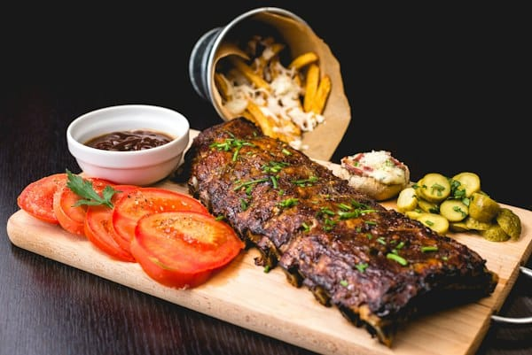
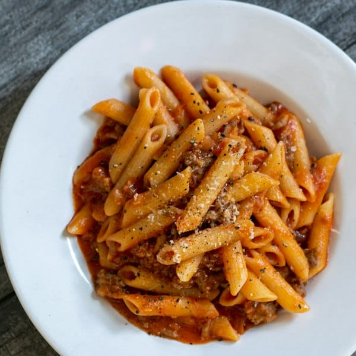

Gastronomia com Sabor e Arte
Pratos especiais, ingredientes selecionados e uma experiência única.
Conheça nosso Cardápio ›


Selecionados diariamente de produtores locais
Hospitalidade familiar em cada mesa
Ideal para família e amigos
Destaques da Casa

Corte nobre na brasa com arroz biro-biro e batatas rústicas.
R$ 89,90
Massa artesanal ao molho pomodoro fresco e manjericão.
R$ 49,90
Bolo quente de chocolate meio amargo com sorvete de creme.
R$ 29,90
Bebida refrescante natural com morango, amora e hortelã.
R$ 16,90Clique no botão acima para descobrir o prato recomendado pelo chef hoje!
O Sabor & Arte nasceu da paixão de nossa família pela culinária artesanal. Cada receita é preparada com tempo, carinho e ingredientes colhidos no ponto certo, resgatando o verdadeiro sabor da comida feita em casa.
Mais do que servir refeições, criamos memórias ao redor da mesa em um espaço rústico e acolhedor.
Cidade: Belo Horizonte — MG (Bairro Savassi)
Horário de Funcionamento: Terça a Domingo, das 11h30 às 23h00